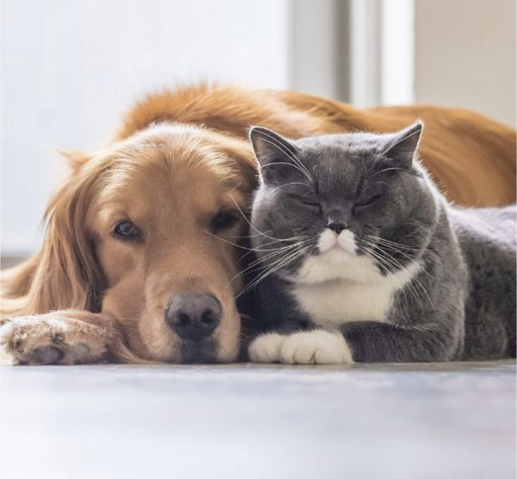
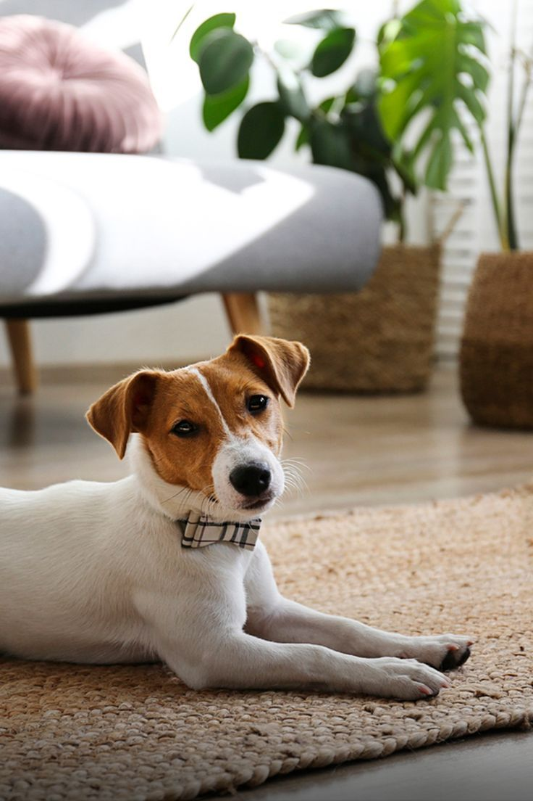
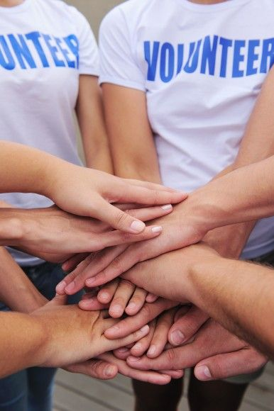
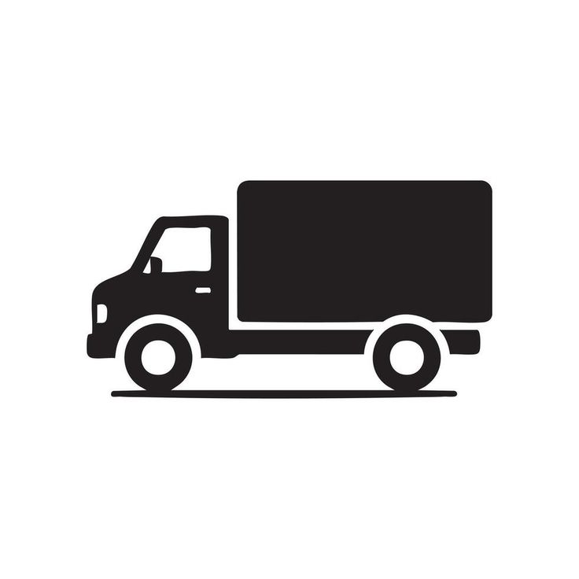
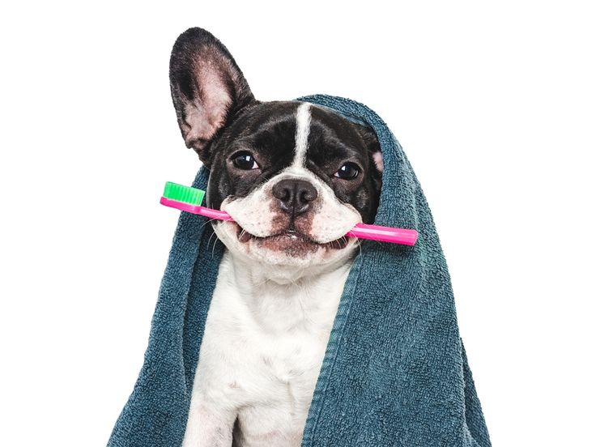
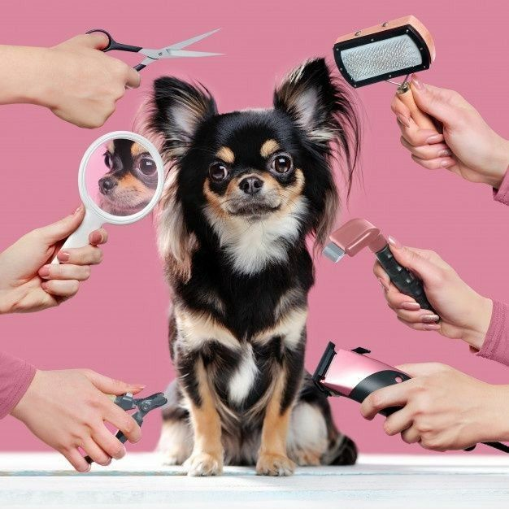
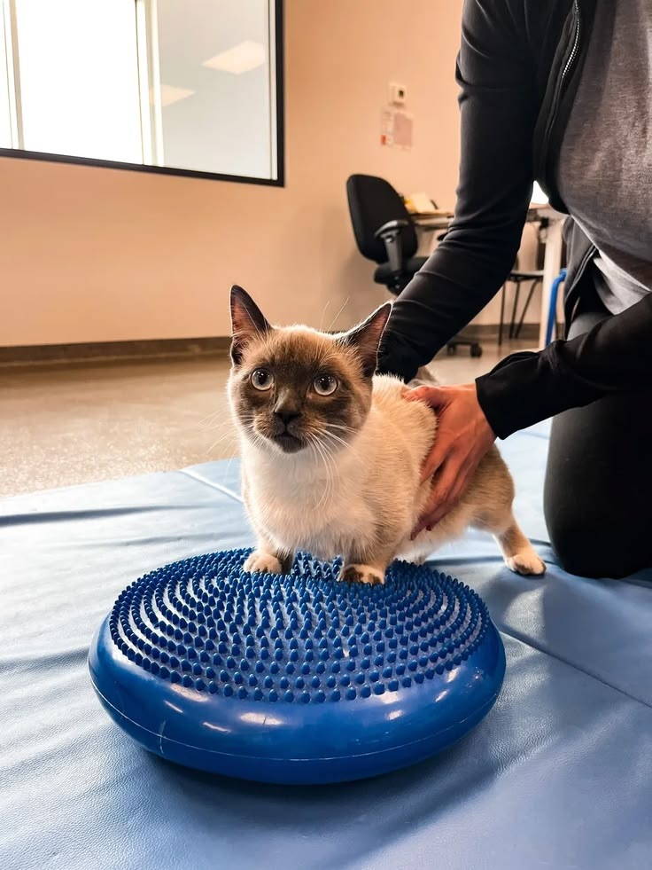

AdopPet
AdopPet

Nuestros Programas de Bienestar Animal
Adopción Definitiva
Dale una segunda oportunidad a un peludito. Nuestro proceso de adopción busca el “match” perfecto entre tu estilo de vida y las necesidades del animal.
Entregamos a los animales esterilizados, vacunados y desparasitados.
Hogares de Paso
Conviértete en un puente hacia su vida definitiva. Brinda refugio temporal y amor mientras encontramos una familia permanente
El refugio cubre el 100% de los gastos veterinarios y alimentacion.


Voluntariado
Únete a nuestro equipo operativo en las jornadas de limpieza, paseos y logistica en los refugios aliados.
Horarios flexibles (sáb/dom)
Requisitos
Ser mayor de edad
Asistir a inducción técnica
Disponibilidad minima de 4 horas mensuales.

Elegir donde quieres ir a nuestros servicios de voluntariado a lo largo de la ciudad.
Bienestar e higiene
Limpieza de dientes para evitar caries y mal aliento.

Profilaxis dental
- Consiste en un procedimiento de limpieza profundo donde se extrae cualquier tipo de barro, infección o contaminación que pueda afectar y representar un problema en la salud dental de nuestras mascotas. Existen varias señales que tu mascota refleja cuando presenta alguna enfermedad bucal y lo ideal es acudir a un médico veterinario para actuar sobre esto, de manera rápida y efectiva.
- El sarro dental es una placa que se acumula alrededor de los dientes y encías, algunas veces provoca inflamación y pequeñas infecciones generando mal aliento en tus mascotas. Asimismo, este método nos permite cuidar el esmalte dental de nuestros peluditos, eliminando la acumulación de bacterias que a diario crecen en sus encías.
- Adicionalmente, prevenimos otro tipo de enfermedades que parten de las mismas bacterias y sarro que a diario crece en sus dientes, enfermedades que pueden afectar incluso hasta su corazón.
Cortes de pelo, baños medicados y arreglo general.

Cortes de pelo, baños medicados y arreglo general.
- Iniciamos con una evaluación detallada de la piel y pelaje de la mascota para elegir el champú y acondicionador medicado o hipoalergénico idóneo. Este servicio busca aliviar afecciones dermatológicas frecuentes como resequedad, descamación, pulgas o sensibilidad cutánea.
- Realizamos un corte higiénico estratégico en zonas sensibles, vaciado controlado de glándulas anales, desinfectado de oídos para prevenir otitis y un corte de uñas adecuado que evite problemas en la pisada y postura del animal.
- Finalizamos con un secado a temperatura regulada y un cepillado profundo para remover todo el pelo muerto, garantizando que el proceso sea relajante, seguro y libre de estrés para la mascota.
Terapias de rehabilitación física.

Terapias de rehabilitación física.
- Diseñamos planes terapéuticos personalizados para mascotas que han sufrido cirugías ortopédicas, accidentes o que padecen patologías crónicas como displasia de cadera o artrosis. El objetivo principal es reducir el dolor y restaurar la movilidad articular.
- Aplicamos técnicas de masajes descontracturantes, estiramientos pasivos y termoterapia (aplicación de frío/calor) para estimular la circulación sanguínea y acelerar la regeneración muscular en áreas debilitadas.
- Acompañamos a la mascota en ejercicios de bajo impacto para recuperar el equilibrio y la fuerza, garantizando que conserve su autonomía y mejore su calidad de vida día a día.